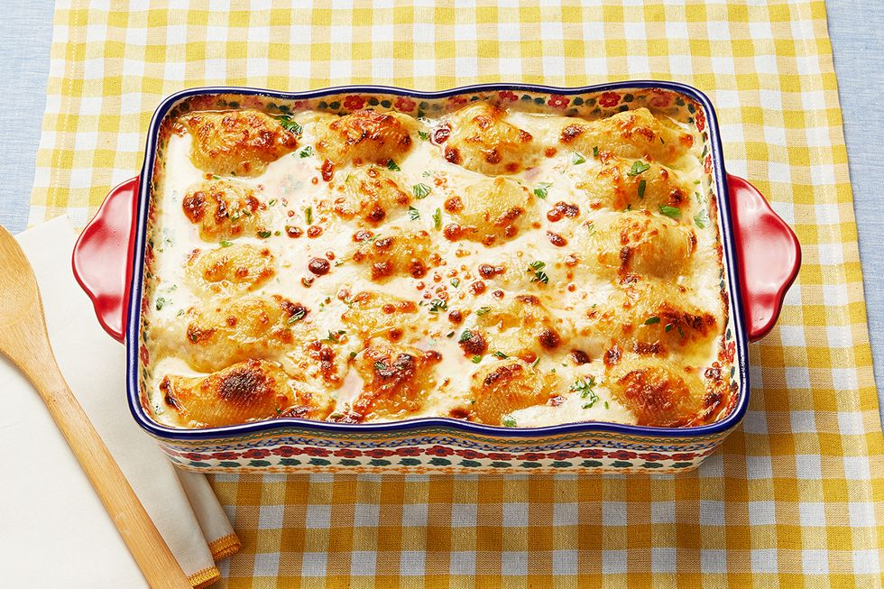

Casserole

What beautiful cheesy goodness!
Just look at its golden beauty
Thats enough! Stop looking at that magnificent casserole and lets make it!
We'll get to that after I force an unholy number of ads onto your screen. Mwahahaha!!
Don't forget to read all about how this casserole will change your life, your friends lives, and even your cats life!
Just one more pointless line beforetherecipe.
Ingredients
- 20 whole jumbo pasta shells, cooked and drained
- 2 whole boneless, skinless chicken breasts
- 3/4 c. ricotta cheese
- 3/4 c. cottage cheese
- 3/4 c. grated mozzarella cheese, plus more for the top
- 2 c. grated parmesan cheese, plus more for the top
- 2 whole eggs
- 1/4 c. minced fresh parsley
- 2 tbsp. minced fresh basil
- 4 tbsp. butter
- 2 tbsp. flour
- 2 c. whole milk
- 1 c. heavy cream
- 3 cloves garlic, minced
Steps
- Preheat oven to 375 degrees. Season the chicken breasts on both sides with salt and pepper.
Heat a grill pan or iron skillet over medium heat, drizzle with olive oil, and cook the chicken on both sides until it's done.
Remove and shred with two forks and allow to cool.
- In a medium bowl, combine ricotta, cottage cheese, mozzarella, 1 cup of the Parmesan, eggs, 2 tablespoons fresh parsley, salt, pepper, and chicken.
Stir to combine, splashing in 2 tablespoons heavy cream if needed. Set aside.
- In a large skillet over medium heat, melt butter and sprinkle over the flour. Whisk and cook until the roux turns golden brown.
Pour in the milk and cream, whisking constantly, and cook for a few minutes, until thickened.
Add the garlic, the additional 1 cup Parmesan, salt, pepper, 1 tablespoon minced parsley, and minced basil and stir until combined.
Taste and adjust seasonings as needed. Set aside.
- Add 1 cup sauce to the bottom of a 9 x 13 inch baking dish. Using a spoon, fill each of the jumbo shells generously with the chicken/ricotta mixture.
Lay them face down in the pan, then pour the sauce all over the top. Sprinkle on extra mozzarella and Parmesan, then bake for 25 minutes, or until bubbly and golden.